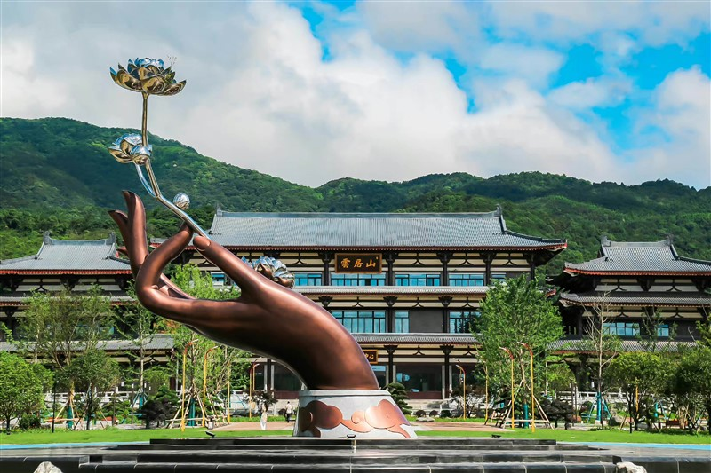

山名由来 云居山为九岭山脉之余脉，古名“欧山”。相传战国末年，秦兼并六国之际，楚怀王被骗入秦，楚将欧岌为保护楚怀王之后裔康王，避难于匡庐，秦将王翦急追而来，混乱中，康王走失，欧岌到处寻找不见，遂循入此山修炼得道，人们为了纪念欧岌，就称此山称为“欧山”； 李唐之后，人们因此山“山势雄伟高峨，常为云雾所抱”，又将此山改名为“云居山”，简称“云山”。
云居山概述 云居山风景区总面积236平方公里，主峰海拔969米，平均海拔700米，是中国著名佛教名山 、国家重点风景名胜区。 云居山自然资源丰富，风光秀丽，山势雄奇，植被繁茂森林覆盖率89.2%，负氧离子含量每立方米15万个，气候宜人，夏天平均气温只有23度左右，是著名的避暑胜地和康养胜地。 云居山不仅风光秀丽，文化底蕴也相当深厚。自唐代以来，白居易、苏东坡、黄庭坚、王安石、朱熹、陆游等多位历代文人墨客在此留诗作画。古往今来，云居山以奇特的自然景观和佛教禅宗著名道场，被古人誉为“云岭甲江右，名高四百洲”、“冠世绝境，天上云居”。
